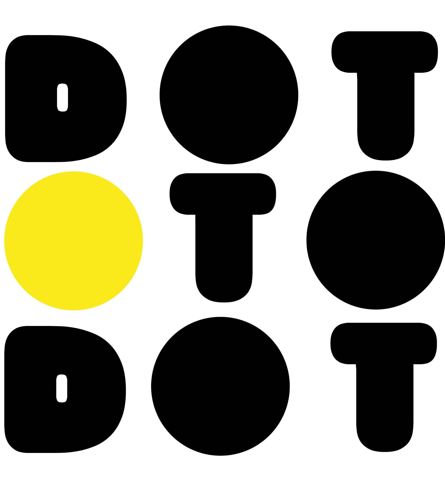

<header class="bar">
 <div class="ui-g">

   <div class="col-sm-3 "></div>
   <div class="col-sm-6 "><h1 align="centre"> Welcome to {{title}} {{this.afService.displayName}}</h1> </div>
   <div class="col-sm-3 "><app-search></app-search></div>
</div>


        <div  [ngSwitch]="isLoggedIn" class="primary" >
             <md-toolbar color="primary">

               <md-toolbar-row>
                 <button md-button ><a routerLink="/" routerLinkActive="active"></a></button>
                 <button md-button [md-menu-trigger-for]="aboutMenu"></button>
                 <button md-button><a *ngSwitchCase= "false" routerLink="/login" routerLinkActive="active" ></a></button>
                 <button md-button><a *ngSwitchCase= "false"  routerLink="/register" routerLinkActive="active"></a></button>
                 <button md-button><a *ngSwitchCase= "true" routerLink="/login" routerLinkActive="active"></a></button>
                 <button md-button><a *ngSwitchCase = "true" routerLink="/createProject" routerLinkActive="active"></a></button>
                 <button *ngSwitchCase = "true" md-button [md-menu-trigger-for]="userMenu"></button>
                 <button  *ngIf="isadmin"  md-button [md-menu-trigger-for]="addMenu"></button>
               </md-toolbar-row>
             </md-toolbar>


            <md-menu #userMenu="mdMenu">
               <button md-menu-item> <a   routerLink="/myProfile" routerLinkActive="active">Profile</a> </button>
               <button md-menu-item> <a   routerLink="/myProjects" routerLinkActive="active">My Projects</a></button>
               <button md-menu-item> <a routerLink="/dashboard" routerLinkActive="active">Dashboard</a></button>
             </md-menu>


           <md-menu #addMenu="mdMenu">
              <button md-menu-item> <a *ngIf="isadmin" routerLink="/adminDashboard" routerLinkActive="active">Admin Dashboard</a></button>
              <button md-menu-item> <a *ngIf="isadmin" routerLink="/createAdmin" routerLinkActive="active">Create Admin</a><</button>
            </md-menu>

          <md-menu #aboutMenu="mdMenu">
            <button  md-menu-item> <a  routerLink="/whatIs" routerLinkActive="active">What is DOT TO DOT </a></button>
            <button  md-menu-item> <a  routerLink="/aboutUs" routerLinkActive="active">About us</a></button>
            <button  md-menu-item> <a  routerLink="/partners" routerLinkActive="active">Partners</a></button>
            <button  md-menu-item> <a  routerLink="/FAQ" routerLinkActive="active">FAQ</a></button>
          </md-menu>
        </div>


</header>


<router-outlet></router-outlet>

<app-footer></app-footer>
